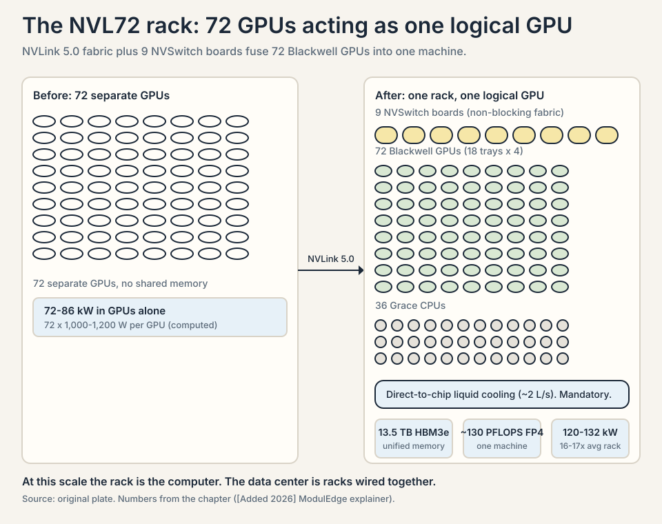

Episode 11 (Synthesis): How AI Hardware Actually Works
Video blocked (ad-blocker or local file mode).
Watch on YouTubeVideo not loading? Watch on YouTube
Synthesis chapter: the track's hardware fragments plus the DeepSeek #459 hardware deep-dive (Dylan Patel and Nathan Lambert), with verified 2026 additions.
Episode 11 (Synthesis): How AI Hardware Actually Works
This is a synthesis chapter, not a single episode. The ten episodes in this track leave the three hardware angles thin: why Nvidia is so expensive, what is inside a GPU and a rack, and how AI clusters get built. The fragments exist (Episode 1’s compute race and electricity tripling, Episode 5’s RSC supercomputer, Episode 8’s compute-as-currency), but no episode teaches the hardware from zero.
The backbone of this chapter is Lex Fridman Podcast #459 with Dylan Patel (SemiAnalysis) and Nathan Lambert (AI2), a hardware deep-dive on DeepSeek, export controls, and cluster buildouts. That episode narrowly missed this track’s top 10 by view count and is used here as the grounding source. Two verified 2026 sources are added where the episodes are silent: current Blackwell rack specifications and the Stargate Abilene status as of March 2026.
How to read the sourcing. Every section is labeled:
- [Episode]: the claim comes from a track episode or from #459. Paraphrased, not quoted, because transcripts are YouTube captions.
- [Added 2026]: the claim comes from a verified 2026 source outside the episodes, checked in October 2026.
- Anything unverifiable is marked [uncertain].
Part A: Why Nvidia is so expensive
[Episode] The three-vector model: flops, memory bandwidth, interconnect
In #459, Patel describes GPU competition as a three-vector game: flops (raw computation), memory bandwidth (how fast data reaches the computation), and interconnect (how fast GPUs talk to each other). Nvidia wins because it leads on all three at once, and because the vectors interact: a chip with great flops starves without memory bandwidth, and a cluster with great chips stalls without interconnect.
The DeepSeek story is the proof. DeepSeek trained on H800 GPUs, a China-export-compliant variant of the H100. The H800 kept most of the flops but cut the interconnect bandwidth (the export controls targeted interconnect specifically). DeepSeek compensated in software: Multi-head Latent Attention (MLA) cut KV-cache memory by 80 to 90 percent, mixture-of-experts (671 billion total parameters, only 37 billion active per token) cut compute per token, and PTX-level programming (writing below CUDA, scheduling the streaming multiprocessors directly, bypassing NCCL) squeezed the limited interconnect harder. In #459, Patel’s point: DeepSeek’s innovations were forced by the interconnect constraint. Nvidia’s interconnect lead is the moat within the moat.
For inference, the binding vector flips. In #459, the H20 (another export-compliant chip) is described as better for reasoning inference than the H800, because inference is memory-bandwidth bound: the chip spends its time loading the KV cache, not computing. The H20 has more memory bandwidth per dollar. The decision rule: training wants flops plus interconnect. Inference wants memory bandwidth. Buy the vector your workload is bound by.
| Vector | Measures | Training needs it for | Inference needs it for | Episode proof |
|---|---|---|---|---|
| Flops | Raw math speed | Compute per step | Less critical | H800 kept most of the flops |
| Memory bandwidth | Data-feeding speed | Feeding the math | Loading the KV cache per token | H20 beats H800 for serving. MLA cut the cache 80 to 90 percent. |
| Interconnect | GPU-to-GPU talk speed | Gradient exchange every step | Less critical | Export controls cut it. DeepSeek innovated around it. |
Figure 1. The three vectors of GPU competition. AI Podcast Curriculum, ep11 (Lex Fridman Podcast #459, 2026-10-06). Shell 1. Name the toy: three vectors, two workloads. Training is interconnect-bound. Inference is memory-bandwidth-bound. Source: original table.
| Chip | What changed against the H100 | Why | Best workload |
|---|---|---|---|
| H800 | Flops kept, interconnect cut | Export-compliant chip for China | Training, with software workarounds |
| H20 | More memory bandwidth per dollar, modest flops | Export-compliant chip for China | Serving reasoning models |
Figure 2. The export-control chips read through the three vectors. AI Podcast Curriculum, ep11 (Lex Fridman Podcast #459, 2026-10-06). Shell 3. Apply the one rule: the controls cut the interconnect vector, so buy the vector your workload is bound by. Source: original table.
[Episode] The CUDA moat is software, not silicon
In #459, Patel says AMD’s hardware is in some ways better than Nvidia’s, but AMD’s software is far behind, and the gap is not closing fast enough. The mechanism: CUDA (Nvidia’s GPU programming platform) is a 20-year accumulation of libraries, kernels, tools, and programmer habits. Every AI researcher writes CUDA. Every framework targets CUDA first. A competitor must replicate not a chip but an ecosystem.
Nvidia’s culture, in #459’s telling (citing “The Nvidia Way”), is built bottom-up to serve external developers: the CUDA teams ship libraries for new kinds of high-performance computing as fast as researchers invent them. Google’s JAX/XLA teams, by contrast, serve internal customers (Search, DeepMind), not external developers. The mechanism of the moat: Nvidia’s software org treats the world’s researchers as its customers. Google’s treats its own product teams as customers. Ecosystems compound. Internal tools do not.
The honest price, from #459: Nvidia is the only company that does everything reliably right now. No competitor arose from DeepSeek’s efficiency breakthrough, because DeepSeek itself is a large Nvidia customer. Efficiency gains accrue to Nvidia’s customers, who buy more Nvidia chips (Jevons paradox, below).
[Episode] The 1,200x cost collapse and Jevons paradox
In #459, Lambert describes the cost-per-intelligence curve: GPT-3-level capability cost roughly 1,200 times more a few years ago than it does now. GPT-4 launched at about 60 dollars per million tokens and fell to about 2 dollars. The mechanism: architectural innovation (MoE, MLA), better data, better training, better inference systems, better hardware, all multiplying.
The market’s reaction to DeepSeek is the lesson. Nvidia’s stock fell on the theory that cheaper models mean less GPU spending. In #459, both guests call this wrong, and cite Jevons paradox: when a resource gets more efficient, total consumption rises. Their evidence: AWS raised H100 prices after DeepSeek’s V3 launch, H20 chips sold out, and getting 16 to 32 H100s on short notice became hard. Cheaper intelligence means more intelligence demanded, which means more GPUs. The decision rule: never confuse unit cost with total spend. Efficiency grows markets.
[Episode] The 5 million dollar training cost, honestly accounted
In #459, the guests dissect DeepSeek’s famous 5 million dollar training claim (the episode’s figure, widely reported as 5.6 million). What it excludes: research salaries, the 2 to 4 times multiplier for research runs and ablations (failed and exploratory runs), post-training, and inference costs. Nobody has spent more than 1 billion dollars on a single public model run. GPT-4 cost a couple hundred million including the surrounding work. The mechanism of the misunderstanding: the 5 million figure counts the final training run’s GPU-hours, not the program that produced it. The decision rule: when a lab quotes a training cost, ask what is excluded. The answer is usually most of it.
[Added 2026] What a Blackwell rack costs and why
A GB200 NVL72 rack (72 Blackwell GPUs in one rack, acting as a single logical GPU) costs roughly 3.0 to 3.4 million dollars per rack, about 3.9 million all-in with networking and storage, per 2025-2026 industry reporting. Rental alternatives in 2026 run roughly 10 to 18 dollars per GPU-hour for GB200 capacity. The mechanism of the price: you are not buying chips. You are buying 72 GPUs, 9 NVSwitch boards, 36 Grace CPUs, 13.5 terabytes of HBM3e (HBM, High Bandwidth Memory, is fast memory stacked next to the GPU chip), 2 miles of copper cabling, liquid cooling, and the NVLink fabric that makes it one machine. The rack is the product. The chip is a component.
Part B: Inside the GPU and the rack
[Episode] The H100 to Blackwell power ladder
In #459, the power progression: the A100 drew about 400 watts per GPU. The H100 drew about 700 watts. Blackwell draws about 1,000 to 1,200 watts per GPU. All-in (GPUs plus CPUs, networking, memory, cooling overhead), a Hopper-era GPU costs roughly 1,200 to 1,400 watts of data-center power. The mechanism: each generation buys more flops per chip by burning more watts per chip. Performance per watt improves, but watts per chip rise, because the economic optimum is maximum throughput per socket, not minimum power.
[Added 2026] The GB200 NVL72 rack draws roughly 120 kilowatts nominal, 130 to 132 kilowatts at full load: about 16 to 17 times the 7.6-kilowatt industry-average rack. It weighs 1.36 metric tons. About 115 kW is removed by direct-to-chip liquid cooling and 17 kW by air. Liquid cooling is mandatory: the rack ships only as a liquid-cooled system. For comparison, 68 percent of pre-2015 enterprise data centers cannot host it at all.
[Episode] Memory: HBM and the KV-cache problem
In #459, Lambert explains why memory dominates inference economics. A language model generating text must keep the KV cache: the keys and values of every previous token, so it does not recompute them. The cache grows with context length (quadratically in the naive formulation), and loading it from memory is what the chip spends most of its time doing during inference. This is why inference is memory-bandwidth bound and why the H20 (high memory bandwidth, modest flops) beats the H800 for serving reasoning models.
DeepSeek’s MLA attacked exactly this: compress the KV cache by 80 to 90 percent, and the same hardware serves far more users. Reasoning models (o1, R1) multiply the problem: they generate long chains of thought, so the cache grows and inference costs multiply. The mechanism of the whole inference business: tokens per second per dollar is set by memory bandwidth, and every architectural trick is a tax cut on memory.
[Episode] Interconnect: NVLink, InfiniBand, and why closeness wins
In #459, Patel explains the interconnect hierarchy: inside a server, NVLink connects GPUs at terabytes per second. Between servers, InfiniBand (or Nvidia’s Spectrum-X Ethernet) connects at hundreds of gigabytes per second. Between data centers, fiber connects at far less. Training requires the tightest coupling: every training step ends with GPUs exchanging gradients, so slow interconnect means idle GPUs burning power while waiting.
Water cooling, in #459’s telling, is partly an interconnect story: liquid cooling lets you pack chips physically closer, and closer chips mean shorter, faster interconnects. Elon Musk’s Memphis cluster used water cooling on Hopper-generation chips before Nvidia mandated it, with about 90 external water-chiller containers. [Added 2026] For Blackwell’s highest-end configurations, Nvidia made liquid cooling mandatory: you cannot air-cool 120 kW in a rack.
[Episode] Why Google does not sell TPUs
In #459, Patel explains the TPU paradox. Google has the biggest AI cluster on Earth, but spread across multiple sites (Iowa, Nebraska, Ohio complexes), not one building. It does not sell TPUs externally because: (1) the TPU is optimized for Google’s internal workloads (Search, YouTube, ads), with quirks like oversized matrix units that make small models inefficient. (2) the software stack (JAX, XLA, the internal training infrastructure) was never productized for outsiders. Researchers who leave Google find TPUs unusable without the internal stack. (3) Google’s organizations (Cloud, TPU hardware, DeepMind, Search) have different customers and incentives. The mechanism: selling chips requires a developer-ecosystem organization. Google never built one for TPUs. Nvidia is that organization.
[Added 2026] The NVL72 as a single logical GPU
The GB200 NVL72 connects 72 Blackwell GPUs through 9 NVSwitch boards in a fully non-blocking NVLink 5.0 fabric, presenting 13.5 TB of unified HBM3e memory and about 130 petaFLOPS of FP4 compute as one machine. Eight 400-gigabit InfiniBand links connect the rack to the cluster. The PCB complexity is extreme: 32 to 40+ layer boards for the NVSwitch, versus 16 to 20 for Hopper-era baseboards. The mechanism: at this scale, the rack is the computer. The data center is a building full of rack-computers wired together.

Part C: Building an AI cluster
[Episode] The scale ladder: from GPT-4 to Stargate
In #459, Patel lays out the cluster scale ladder. GPT-4 trained on about 20,000 A100 GPUs: roughly 15 to 20 megawatts, a standard large data-center size, but unprecedented as a single training run (a couple hundred million dollars, “a YOLO run”). Meta went from 16,000 to 24,000 GPUs (only 16,000 usable at once, because GPUs are unreliable and spares are mandatory) to about 100,000-128,000 GPUs for Llama 4: roughly 140 to 150 megawatts, a 10x jump in two years.
Then xAI’s Memphis cluster: 200,000 GPUs (100,000 H100s plus 100,000 H200s) in a converted appliance factory. Then Stargate: the Abilene, Texas site at 2.2 gigawatts of power in, about 1.8 gigawatts delivered to chips. The mechanism of the ladder: each generation needs roughly 10x the power of the last, because model scale and training ambition grow faster than efficiency.
flowchart LR
A[GPT-4: 20 MW] -->|10x per generation| B[Llama 4: 150 MW]
B -->|10x per generation| C[Stargate: 1.8 GW]
Figure 4. The cluster power ladder. AI Podcast Curriculum, ep11 (Lex Fridman Podcast #459, 2026-10-06). Shell 2. Count the ladder: 20 MW, 150 MW, 1.8 GW. Change the 10x multiplier and the 2028 rung moves. Source: original toy (episode numbers).
[Added 2026] As of March 2026, Oracle and OpenAI scrapped the planned expansion of the Abilene campus from 1.2 GW to 2 GW after financing talks stalled and OpenAI’s demand forecasts shifted. A winter cooling outage that took buildings offline for days strained the partnership. Nvidia reportedly paid operator Crusoe a $150 million deposit to hold the site and is courting Meta as a replacement tenant. The existing campus (eight buildings, Blackwell GPUs, planned for up to 450,000 GB200s) continues toward mid-2026 completion, and the broader Stargate portfolio (about 7 GW across Texas, New Mexico, Ohio, Wisconsin) proceeds. The lesson: gigawatt-scale commitments are volatile. Tenants’ demand shifts faster than construction timelines.
[Episode] Power: the binding constraint
In #459, the power story in full. Data centers were 2 to 3 percent of US electricity. AI is pushing toward 10 percent by 2028-2030, a rate of change the grid was never designed for. The constraints, in order:
- Generation. New power plants take years. The fast answer is natural gas: Meta is building two massive gas plants in Louisiana. XAI tapped the gas line next to its Memphis factory and burns gas on site, plus mobile generators. Nuclear is the long-term answer (Amazon tried to buy the Talen nuclear plant), but nuclear is too slow for the current race.
- Transmission. In some US regions (Virginia is named), transmitting power costs more than generating it, because the grid cannot be built fast enough. Power must be generated near the data center.
- Transients. Training synchronizes thousands of GPUs: compute, then exchange gradients, then compute. Power draw spikes and crashes in unison. In #459, Elon Musk’s Memphis cluster jittered the grid by 10 to 20 megawatts. Meta’s answer, accidentally open-sourced in PyTorch: an operator (
torch.powerPlantNoBlowup) that makes GPUs compute fake numbers during communication phases so the power draw stays flat and the power plants do not trip. The mechanism: at gigawatt scale, your training loop is a grid event.
In #459, Patel’s cost breakdown: power is less than 20 percent of a cluster’s cost. The GPUs (capital cost and depreciation) dominate. So labs burn gas without hesitation: idling tens of billions of dollars of GPUs for lack of power is the unforgivable sin. Sustainability pledges (Microsoft’s, Meta’s) bend under this arithmetic. Meta buys power-purchase agreements to pretend the electrons are green.
[Episode] Cooling: from air to mandatory water
In #459, the cooling progression: air cooling (fans, heat pipes) was the standard. Google’s TPUs have been water-cooled for years. Elon Musk water-cooled Hopper chips at Memphis scale (the 90 chiller containers) before it was standard. [Added 2026] Blackwell’s NVL72 mandates direct-to-chip liquid cooling (2 liters per second of water per rack through cold plates, coolant distribution units, facility water loops). The mechanism, from Part B: denser chips need closer packing for interconnect, closer packing defeats air cooling, so water is mandatory. Cooling is not facilities trivia. It is the physical prerequisite of the interconnect topology.
[Episode] Networking inside the cluster
In #459: Nvidia’s Spectrum-X Ethernet is displacing InfiniBand in some new builds (xAI Memphis uses it, per the episode’s discussion). Google wires its multi-site super-regions with massive fiber bundles and trains across data centers 30 miles apart. The frontier problem is multi-data-center training, because single sites cannot get enough power. The telecom industry, boring since 5G, is exciting again: co-packaged optics (putting optical transceivers next to the chip) and new switching are the next leaps. The mechanism: every layer of the memory hierarchy (registers, cache, HBM, NVLink, InfiniBand, fiber) has different latency, and programming across them only gets harder. There is no convergence to “one big computer.” The hierarchy is permanent.
[Episode] The foundry beneath it all: TSMC
In #459, Patel explains why all of this depends on one company. TSMC’s foundry model (Morris Chang’s invention): manufacture chips for everyone, compete with no one. A leading-edge fab costs 30 to 40 billion dollars. Only three companies could do leading-edge R&D (TSMC, Samsung, Intel). Samsung is struggling, Intel lost process leadership and is betting on 18A/14A to leapfrog. Intel’s decline, in #459’s telling: missed mobile (said no to the iPhone), lost server share to everyone making ARM chips (including the hyperscalers), Apple Silicon took the high-end PC, no AI silicon wins, and the CEO was fired. Arizona will hold about 20 percent of TSMC’s 5nm-class capacity, but R&D stays in Hsinchu (with Hillsboro and Pyeongtaek in support). The mechanism: leading-edge R&D concentrates where the talent and the existing fabs are. Fabs can be built in Arizona. The R&D ecosystem cannot be moved quickly.
Export controls, in #459: the October 7, 2022 controls targeted flops and interconnect to slow China’s AI. The workarounds: H800/H20 compliant chips, smuggling (ByteDance rents 500,000+ GPUs from clouds worldwide. Singapore is 20-30% of Nvidia’s revenue with a data-center moratorium, so the chips go somewhere. Suitcase-scale smuggling via first-class flights with Supermicro boxes. The AI diffusion rules then restricted even rentals). Patel’s estimate: roughly 200,000 to 300,000 GPUs routed to China outside official channels, plus 1 million legal H20s. The honest price: smuggling works at small scale. At 10-billion-dollar scale the economic activity is unhideable. Compute disadvantage for China grows with each jump in training scale, and serving (not just training) is the binding constraint: DeepSeek could not serve its own model at launch, throttled to a few tokens per second.
[Episode] Who makes money
In #459, the profit map: Nvidia makes the money. The hyperscalers look profitable on paper but are spending the GPU capex first and hoping the services revenue follows. Microsoft makes money on AI accounting-wise. Meta makes money on recommendation AI but loses on Llama. Anthropic and OpenAI lose money by definition (they keep raising). The mechanism: hardware front-runs services. If AGI-level returns arrive, the spend is justified retroactively. If not, the GPU owners hold depreciating assets. The investment thesis, stated dumbly in #459: GDP is humans plus industrial capital. Cheap intelligence grows both.
Q&A
Q1: Why is Nvidia expensive? Give the three-vector answer, like I am new. [Episode] A GPU races on three things: flops (math speed), memory bandwidth (data-feeding speed), and interconnect (GPU-to-GPU talking speed). Nvidia leads all three at once. But the real moat is software: 20 years of CUDA libraries that every AI researcher uses. AMD’s chips are decent. AMD’s software is years behind. You are not buying a chip. You are buying the ecosystem. Follow-up: what is the moat within the moat? Interconnect. Export controls cut it, DeepSeek innovated around it in software, and the innovation proved how valuable it is. Follow-up: could Google’s TPUs compete? Technically yes. Organizationally no. Google never built the external-developer organization that selling chips requires.
Q2: Walk me through the power math of a training cluster. [Episode + Added 2026] GPT-4: 20,000 A100s × ~1,000W all-in ≈ 15-20 MW. Meta’s Llama 4 run: ~128,000 GPUs × ~1,400W ≈ 140-150 MW. Stargate Abilene: 1.8 GW to chips. A GB200 NVL72 rack: ~120 kW, 16x the average rack. The ladder is 10x per generation. Follow-up: why does power dominate planning but not cost? Power is under 20% of cluster cost. GPUs are the rest. But without power the GPUs are bricks, so power is the binding constraint. Follow-up: what is the transient problem? Thousands of GPUs pulse together (compute, exchange, compute), jittering the grid by tens of megawatts. Meta’s fix: burn fake compute during exchanges to flatten the draw.
Q3: Why is inference memory-bound while training is interconnect-bound? [Episode] Training: thousands of GPUs must exchange gradients every step. The wait is GPU-to-GPU talking: interconnect. Inference: one query at a time, the chip loads the KV cache (all previous tokens’ keys and values) from memory for every new token. The wait is memory bandwidth. Hence the H20 (fat memory pipes, modest math) beats the H800 for serving. Follow-up: what does MLA change? It compresses the KV cache 80-90%, cutting the memory tax. Follow-up: why do reasoning models hurt? Long chains of thought grow the cache. More thinking, more memory, more cost.
Q4: What is Jevons paradox, and what was the evidence after DeepSeek? [Episode] When a resource gets cheaper per unit, total use rises. DeepSeek made models cheaper. The market feared less GPU demand. Instead: AWS raised H100 prices, H20s sold out, and short-notice GPU rentals got harder. Cheaper intelligence expanded the market. Follow-up: when does Jevons fail? When demand is saturated. AI demand is nowhere near saturated. Follow-up: apply it to your own work. Automating a task does not reduce work. It increases the tasks worth doing.
Q5: How do export controls work, and what are their limits? [Episode] The October 2022 controls capped the flops and interconnect of chips sold to China. Industry responded with compliant chips (H800: flops kept, interconnect cut. H20: inference-optimized). Smuggling filled gaps at small scale (rentals via ByteDance’s 500,000+ GPUs, Singapore routing, literal suitcases). The limit: at tens of billions of dollars, chip flows are visible in economic data. Each training-scale jump widens China’s disadvantage, and serving capacity (not just training) binds first. Follow-up: what is the diffusion-rule change? It restricted even rentals and allied-country routing: the controls moved from chips to capacity. Follow-up: what is the honest price of controls? They buy time, not victory. Time is the point.
Q6: Why does only TSMC matter, and what would break that? [Episode] A leading fab costs $30-40B. Only TSMC, Samsung, and Intel could do the R&D, and two are faltering. TSMC’s foundry model (make everyone’s chips, compete with no one) aggregated the whole industry’s volume, funding the R&D lead. Arizona gets ~20% of 5nm-class output, but R&D stays in Taiwan. What breaks it: Intel’s 18A/14A leapfrog working, Samsung recovering, or a Taiwan crisis. Follow-up: why can fabs move but R&D cannot? Fabs are capital. R&D is a talent ecosystem built over decades. Follow-up: what is the single point of failure? The R&D concentration, not any one fab.
Q7: What does the Stargate saga teach about gigawatt-scale building? [Added 2026 + Episode] The March 2026 Abilene lesson: the campus works (Blackwell GPUs running, buildings completing), but the 1.2→2 GW expansion died on financing and shifting demand forecasts, plus a winter cooling outage. Tenants’ needs move faster than construction. Nvidia paid $150M to hold the site and shopped it to Meta. The lesson: at gigawatt scale, the binding constraints are financing, power-grid timelines (a year-plus delays), and cooling reliability, not chip supply. Follow-up: connect to Episode 1’s constraint chain. Silicon → transformers → electricity → financing → weather. The chain keeps extending. Follow-up: what is the decision rule for builders? Secure power and financing before chips. Design cooling for the worst weather, not the average.
Q8 (applied): You must choose AI infrastructure for your company. Apply this chapter. [Synthesis] Step 1: classify the workload. Training or fine-tuning: buy flops + interconnect (H100/H200/Blackwell, NVLink fabric). Serving: buy memory bandwidth per dollar (H20-class, high HBM). Step 2: price honestly. Quotes exclude research runs (2-4x), power (<20% but binding), networking, and cooling. Step 3: check the constraint chain: chips (weeks), power (years), cooling (weather). Step 4: decide build vs. rent using Jevons: if your demand grows with efficiency, renting compounds. Buy when utilization is predictably high. Step 5: watch the foundry: single-source risk on TSMC is real. Dual-sourcing is a fantasy at the leading edge, so plan around allocation, not choice. Follow-up: when is AMD the answer? When your stack is portable (PyTorch, no exotic kernels) and someone else validated the drivers on your exact workload. Verify, then trust.
How to imbibe this
- This week: find your binding vector. Pick your most expensive compute workload (or your team’s). Determine: is it flops-bound, memory-bound, or interconnect-bound? (Rule of thumb: training large models: interconnect. Serving chatbots: memory bandwidth. Dense math: flops.) Write the answer and what you would buy differently.
- Price one AI thing honestly. Take a quoted AI cost (an API bill, a training quote). List what the quote excludes: retries, research runs, power, people. Multiply accordingly. This is the 5 million dollar exercise.
- Map a constraint chain. For anything you are building, list inputs in scarcity order (Episode 1’s STE: silicon, transformers, electricity). Put your next hour into the scarcest input.
- Run the Jevons test. Find something that got cheaper in your work. Did total use rise or fall? If it rose, plan capacity for the rise, not the savings.
- Design the hell first. For the most powerful tool you use or build, write its abuse case (Grimes’s rule, Episode 10) and the prevention. Hardware people do this with export controls. Do it for your software too.
Observable behavior change: by next week, you have one binding-vector analysis, one honestly-priced AI cost, and one hell-design with prevention.
Think it yourself
- Guided Fermi. A cluster has 100,000 H100s at 1,400W all-in. What is the power draw? (Scaffolding: 100,000 × 1,400 = 140 MW.) At $0.10/kWh, what is the daily electricity bill? (Answer: 140 MW × 24 h = 3,360 MWh. $336,000/day.) If the GPUs cost $30,000 each, what is the capex? (Answer: $3B.) What fraction of one year’s capex depreciation (3-year straight line = $1B/yr) is the annual power bill ($123M)? (Your answer: ~12%. Power is the binding constraint, not the cost.) Now you try: how many NVL72 racks (72 GPUs each) hold 100,000 GPUs? (Answer: ~1,389 racks.) At 120 kW each, what is the rack power? (Answer: ~167 MW.)
- Argue both sides. “Export controls on AI chips make the world safer.” Three sentences for, three against. Your brain only.
- The three-vector toy. You have $1M. Option A: 33 GPUs with 2x flops, 1x memory, 1x interconnect. Option B: 50 GPUs with 1x flops, 2x memory, 2x interconnect. Which trains a large model faster? (Answer: B, probably. Training is interconnect-bound and more GPUs with better talking beat fewer fast loners.) Which serves a chatbot cheaper? (Your answer: B again. Serving is memory-bound.) When does A win? (Your answer: single-GPU dense math with no communication.)
- Journaling. “What is my CUDA?” What ecosystem lock-in do you depend on (a framework, a vendor, a platform)? What would switching cost? 200 words. No editing.
- The 2030 cluster sketch. Extrapolate the 10x-per-generation ladder: if 2024 is 150 MW and 2026 is ~1.5 GW, what is 2028? (Your answer: ~10+ GW, a city’s worth.) What breaks first: generation, transmission, or financing? Write one paragraph defending your pick. (The March 2026 Abilene story is evidence for financing and grid timelines.)
Skills you can now use
- Three-vector hardware analysis. Classify any AI workload as flops-, memory-, or interconnect-bound and buy accordingly.
- Honest AI cost accounting. Expand any quoted training or inference cost with the excluded multipliers (research runs, power, people).
- Constraint-chain mapping for infrastructure. Order chips, power, cooling, networking, financing by lead time and work the longest lead first.
- Jevons-aware capacity planning. Plan for demand growth when efficiency improves, not for savings.
- Single-point-of-failure analysis. Find the TSMC-like concentration in any supply chain and price the risk.
Memory aids
- Mnemonic for the vectors: Flops, Memory, Interconnect. FMI: “Find the binding one.”
- Mnemonic for the cost illusion: The quote excludes the program. Research runs 2-4x, power, people, inference. Multiply before you believe.
- Mnemonic for the ladder: 20 MW → 150 MW → 1.8 GW. GPT-4, Llama 4, Stargate. 10x per generation. MGI: “Megawatts Grow Insanely.”
- Never-confuse pair: Training-bound (interconnect. GPUs must talk every step) versus inference-bound (memory bandwidth. The chip loads the KV cache per token). Buy the vector your workload needs.
- Never-confuse pair: [Episode] claims (from transcripts. Paraphrased. Captions, not verbatim) versus [Added 2026] claims (from verified 2026 sources, linked). This chapter keeps them labeled. Do not mix them.
- Trap card: “Cheaper models mean fewer GPUs.” Jevons paradox: efficiency grows the market. AWS raised H100 prices after DeepSeek.
- Trap card: “The chip is the product.” The rack is the product (NVL72: 72 GPUs, 9 NVSwitches, liquid cooling, $3M+). The data center is the computer.
Go deeper
- The grounding episode (#459, the backup source): https://www.youtube.com/watch?v=_1f-o0nqpEI
- Nvidia Blackwell architecture explainer with NVL72 specs [Added 2026]: https://www.moduledge.com/blog/nvidia-blackwell
- Stargate Abilene March 2026 status reporting [Added 2026]: https://www.unite.ai/openai-and-oracle-scrap-stargate-expansion-in-texas/
- The CUDA moat in book form (“The Nvidia Way,” cited in #459. Verify editions yourself): search for the title at your bookseller